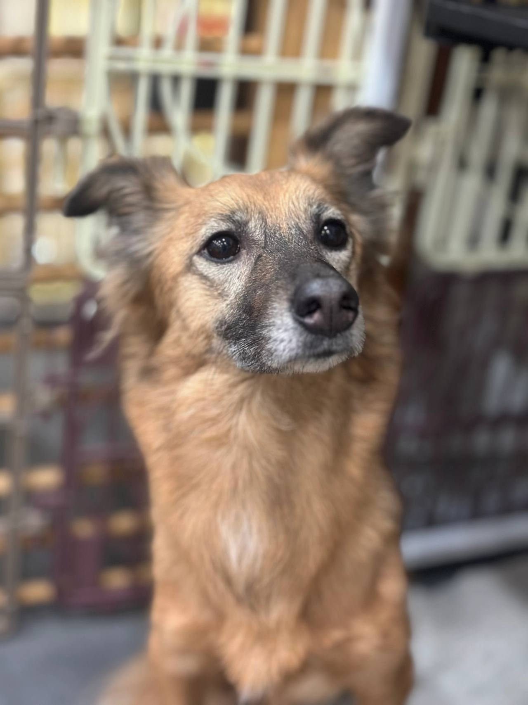
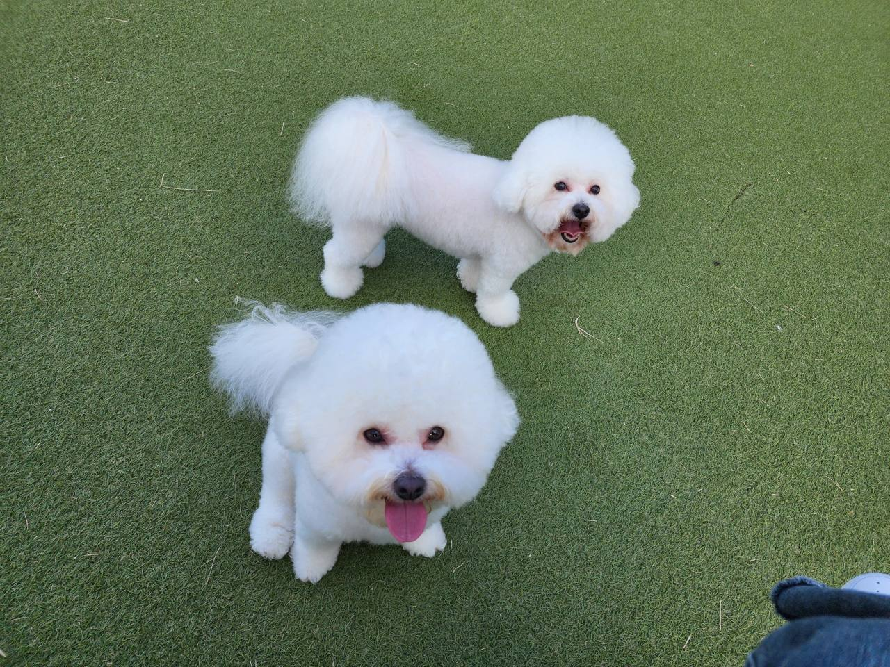
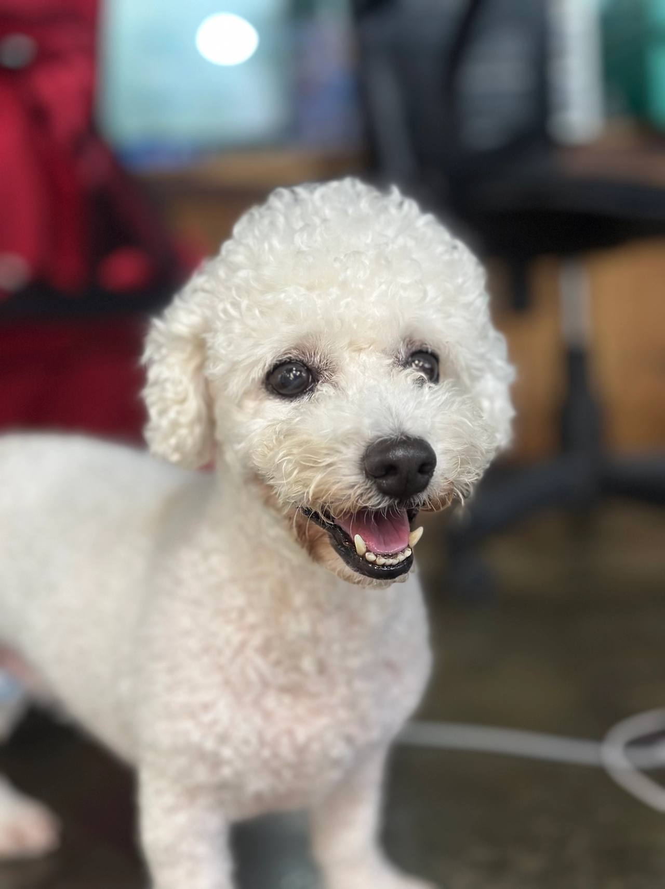
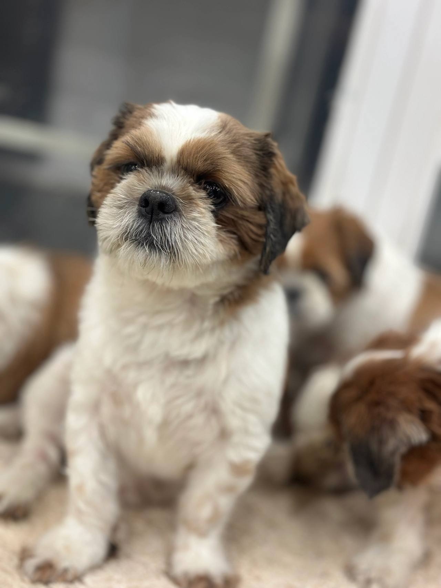
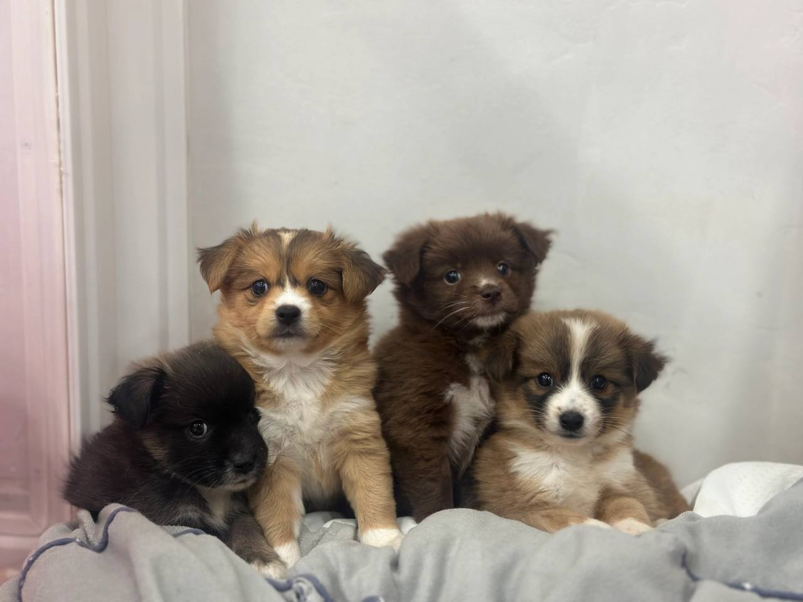

임신, 출산
출산 전후로돌보기 어렵거나아기와 함께 두기불안할 때
LOCAL GUIDE
상처 입은 동물들이 마음을 치유하고 건강한 일상을 되찾을 수 있도록 돕는 안동유기동물보호소 시설을 찾는 과정은 정성이 듭니다. 영양가 있는 식단 제공은 물론이고 주기적인 실내 소독이 실현되는지 면밀히 살펴야 합니다. 보호실 정원이 꽉 차 있을 때는 접수가 반려될 수밖에 없음을 양해하셔야 합니다.
REHOMING
개인적인 사정으로 반려견과 더 이상 함께하기 어려운 상황일 때 체계적인 절차를 거쳐 아이를 입소시키고 무료 분양으로 보금자리를 이어 줍니다. 전화 상담(0505-707-0401)을 통해 현재 상황을 파악하며 무리한 수용 대신 여건에 맞춰 신중하게 돌봄을 시작합니다.
갑작스러운 환경 변화 속에서도 아이가 평온함을 잃지 않도록 세심하게 보살피며 다음 행보를 준비합니다. 이는 책임 있는 보호 속에서 아이에게 새로운 가족을 만날 기회를 열어 주는 과정입니다.
새로운 가족을 찾아 주는 일은아이에게 건넬 수 있는마지막 선물입니다.
출산 전후로돌보기 어렵거나아기와 함께 두기불안할 때

함께 살다동물 알러지가 나타나생활이 어려워졌을 때

해외로 데려갈 수 없거나이사한 집에서함께하기 어려울 때군 입대와 오랜 부재도같은 경우에 가깝습니다.

보호자가 아프거나연로해졌을 때아이도 나이가 들어집에서 돌보기 어려울 때
상담부터 입양 공고까지, 순서는 같습니다.

유선 상담을 통해 나이, 지역, 질병 유무와 특이 상황을 확인합니다. 센터 내부 공간을 종합적으로 살펴본 뒤 1차 입소 가능 여부를 결정합니다.

직접 센터로 방문하시거나 이동 지원 일정을 조율하여 선택합니다. 전국 어디든 전담 인력이 무상으로 픽업하여 이동을 돕습니다.

제반 확인 사항과 규정된 비용 조항을 면밀하게 검토합니다. 안내 내용을 충분히 숙지한 후 정식 입소 동의서를 작성합니다.

건강 상태와 함께 대형견, 소형견, 노령견 여부를 다각도로 살핍니다. 확인된 상태에 맞춰 아이가 안전하게 머물 전용 공간을 정합니다.

안정적인 생활 속에서 아이의 사진과 영상을 정성껏 촬영합니다. 새로운 인연을 맞이할 수 있도록 사전 자료를 차분히 정리합니다.

공식적인 입양 공고를 등록하여 아이의 다음 여정을 이끕니다. 적합한 보금자리를 찾아 새로운 가족과 따뜻하게 연결됩니다.
개별 일과와 성향 점검을 거쳐 생활 적응을 준비하고 있는 강아지 현황입니다.
양육 환경과 반려견의 성향이 부합하는지 점검하는 순서입니다.
주거 형태, 가족 구성원의 동의 여부, 돌봄 시간 등을 유선 상담을 통해 점검합니다.
보호소에 방문하여 개체의 건강 이력과 행동 특성을 확인하고 직접 대면 시간을 가집니다.
지속 양육에 관한 세부 항목을 확인하고 확인 서류를 작성한 뒤 가정을 이룹니다.
산책하고, 밥 먹고, 미용하는 보호소의 하루입니다. 사진을 누르면 그 이야기를 볼 수 있어요.
안내
쾌적한 녹지 공간이 인접한 안동 주민분들은 시설의 위생 상태와 산책 운영 여부를 가장 눈여겨보십니다.
입소를 희망하거나 내부 관리 시스템이 궁금하시다면 0505-707-0401 유선 창구로 안동유기동물보호소 세부 절차를 문의해 보시기 바랍니다. 정원 마감 시 입소가 절대 불가하므로 실시간 공실 현황을 미리 조회하는 절차가 가장 안전합니다. 전화상으로 아이의 크기와 접종 내역을 바탕으로 1차 적합성 평가를 진행합니다.
보호자의 갑작스러운 입원, 피치 못할 거주지 이전, 혹은 대형견 운송 수단 부재로 직접 방문이 어려운 상황에서는 전문 안심 픽업을 신청할 수 있습니다. 일반 택배나 퀵서비스와 달리 반려동물 전용 안전 격벽과 환기 설비가 갖추어진 차량을 배차하여 이동 스트레스를 최소화합니다.
픽업 기사는 아이의 성향을 미리 숙지하고 보호 장비를 갖추어 방문하며, 출발부터 센터 도착 및 격리실 안착까지의 과정을 보호자에게 상세히 전달합니다. 거주하시는 안동 안동유기동물보호소 여건상 이동 동선이 길더라도 체계화된 운송 시스템을 통해 안심하고 절차를 밟을 수 있습니다.
프로필을 보고 입양을 희망하는 분들은 입양 전용 라인인 0505-464-1004로 연결되어 심층 심사를 받게 됩니다. 가족 구성원의 동의 여부, 실내 주거 형태, 산책 가능 시간, 경제적 양육 계획 등을 엄격히 심사합니다.
단순 변심으로 인한 재파양을 사전에 막기 위해 심도 있는 대면 인터뷰를 통과한 가정에만 최종적으로 아이가 인도됩니다. 입양 후에도 정기적인 사진 소통과 사후 상담을 지원함으로써 생명이 평생 행복할 수 있는 선순환을 완성합니다.
민석 씨는 병상에 누워 있어 아이를 직접 센터까지 데려다줄 수 없는 처지였습니다. 이에 센터의 반려동물 전용 안심 픽업 서비스를 신청했습니다. 약속된 시간에 맞춰 특수 공조 장치와 안전 켄넬이 장착된 전용 운송 차량이 집 앞으로 도착했습니다.
전문 운송 기사는 아이가 놀라지 않도록 천천히 냄새를 맡게 하며 안정시킨 후 안전하게 차량에 탑승시켰습니다. 이동 중 휴게소에서의 휴식 장면, 센터 도착 후 격리실에 안착한 모습까지 사진과 영상으로 민석 씨의 스마트폰에 실시간 전송되었습니다.
Q: 포털 지도에서 검색되는 지역 지점을 바로 찾아가면 안 되나요? 인터넷상에는 실제 거점 시설이 없으면서 키워드 선점만을 위해 등록된 유령 주소들이 상당수 존재합니다. 이러한 곳에 무작정 방문할 경우 문이 닫혀 있거나 엉뚱한 사무실인 경우가 많아 큰 낭패를 볼 수 있습니다.
A: 또한 실제 시설이라 하더라도 당일 수용 공간이 가득 차 있으면 입소가 불가능합니다. 따라서 전국 통합 창구를 통해 실시간 공실과 격리실 상태를 먼저 파악해야 합니다. 입소 가능 여부를 빠르게 검토받으시려면 0505-707-0401로 문의하여 정확한 배정 절차를 밟으셔야 합니다.
일부 업체에서 홍보하는 무조건적인 당일 수용은 시설 내 바이러스 창궐이나 관리 인력 부족으로 이어지기 쉽습니다. 아이가 안전하게 머물려면 최소한의 공간 배정 시간과 격리실 준비가 선행되어야 합니다.
입소 전 사전 전화(0505-707-0401)를 통해 현장 공실 상태를 승인받았는지 점검하십시오. 아이가 이동 직후 바로 쉴 수 있는 단독 공간이 확보되어 있어야만 불필요한 이동 스트레스와 사고를 예방할 수 있습니다.
반려 생활을 이어가기 어려운 한계 상황에 직면했을 때 많은 분들이 유기 시설과 일반 센터의 차이를 정확히 알지 못해 혼란을 겪습니다. 지자체에서 관할하는 유기동물 보호시설은 일정 공고 기간이 경과하면 규정에 따른 행정 처리가 불가피한 구조를 지니고 있어 생명의 지속 가능성 측면에서 뚜렷한 한계를 보입니다. 반면 민간 운영 체계를 갖춘 전문 센터는 아이가 머무는 동안 체계적인 보살핌과 건강 관리를 제공하며 새로운 가족을 만날 때까지 장기적인 보호 체계를 유지합니다.
신중한 결정을 내리기 위해서는 시설의 운영 철학과 생활 공간의 쾌적성을 면밀히 비교해 보아야 합니다. 특히 안동 안동유기동물보호소 탐색 과정에서 아이의 온전한 내일을 도모하고자 한다면 보호와 돌봄, 그리고 다음 입양 연계까지 유기적으로 이어지는 시스템을 갖춘 곳인지 확인하는 작업이 무엇보다 중요합니다.
입소 절차의 첫 단계는 전문 상담원과의 1:1 유선 접수로 시작됩니다. 무작정 방문하는 형태로는 입소가 진행되지 않으므로, 반드시 공식 전화망을 통해 개체의 전반적인 프로필을 공유해야 합니다. 입소 및 파양 접수는 0505-707-0401을 통해 전국 어디서나 표준화된 절차로 연결됩니다.
이 단계에서 반려동물의 연령, 품종, 체중, 접종 이력, 중성화 수술 여부, 그리고 평소 나타나는 행동학적 이상(짖음, 입질, 배변 습관)을 가감 없이 전달해야 합니다. 사실과 다른 정보가 전달될 경우 향후 생활실 배치나 적응 과정에서 심각한 차질이 발생할 수 있습니다.
격리 기간을 무사히 마치고 메인 생활실로 이동한 아이는 전용 잔디 운동장에서 다른 친구들과 뛰놀며 활기를 되찾았습니다. 미디어 팀은 아이의 쾌활한 산책 모습과 온순한 성격을 담은 고화질 사진과 영상을 정성스럽게 제작하여 공식 입양 채널에 게시했습니다.
아이의 이야기를 접한 수많은 분들 중 마당이 있는 주택에서 반려견을 키운 경험이 풍부한 한 부부가 입양을 신청해 왔습니다. 입양 신청은 전용 번호인 0505-464-1004를 통해 접수되었으며, 주거 환경 점검과 심층 대면 인터뷰를 통과하며 최종 입양자로 확정되었습니다.
전국 전용 번호 사전 상담 및 공실 확인
유선 창구를 통해 보호소 내 잔여 수용 정원을 파악하고 아이의 상태에 맞춘 입소 가능성을 먼저 진단합니다.
필수 서류 구비 및 현장 방문 일정 예약
보호 여력이 확인되면 신분증 사본과 동물등록 증빙 서류를 지참하여 정해진 방문 시간을 확정합니다.
현장 내방 및 물리적 환경 대면 검진
실제 머물게 될 시설의 위생 상태를 둘러보고 아이의 보행 상태, 피부, 안구 건강을 대면 확인합니다.
안동유기동물보호소 상담 전화는 무엇인가요?입소 상담 전화는 0505-707-0401입니다. 안동이라고 해서 바로 맡길 수 있는 것은 아니고, 자리와 아이 상태를 먼저 확인합니다.
안동에 따로 적힌 보호소 주소가 있나요?안동유기동물보호소 페이지는 안동 상담 안내입니다. 이 글에 없는 주소를 그 지역 지점이라고 안내하지 않습니다.
전화하면 바로 진행되나요?자리가 없거나 생활이 맞지 않으면 바로 진행되지 않습니다. 전화로 확인한 뒤 만남을 정합니다.
보호소에 맡겨진 후 새로운 가족에게 입양되는 절차는 어떻게 되나요?성향 평가와 기초 적응을 마친 후 공식 공고를 통해 엄격한 주거 및 소득 심사를 통과한 입양자에게만 인계됩니다.
입소 시 어떤 증빙 서류들을 필수적으로 지참해야 하나요?보호자 신분증, 동물등록 정보 변경을 위한 등록증 또는 식별 번호, 최근 진료 및 접종 증명서를 지참하셔야 합니다.
개인 차량 이동이 불가능한 경우 이동 편의가 지원되나요?장거리 이동이나 대중교통 이용이 어려운 상황이라면 안전 전용 차량 운행 여부를 유선 상담을 통해 조율하실 수 있습니다.
시설 주소나 사진만 보고 입소를 바로 결정해도 문제없을까요?과장된 사진에 의존하지 마시고 유선 상담으로 실제 운영 규정과 정원 여부를 면밀히 검증한 뒤 진행하셔야 안전합니다.






CONTACT
입양과 입소, 전국 어디서든 전화로 상담합니다.
전국 입소문의